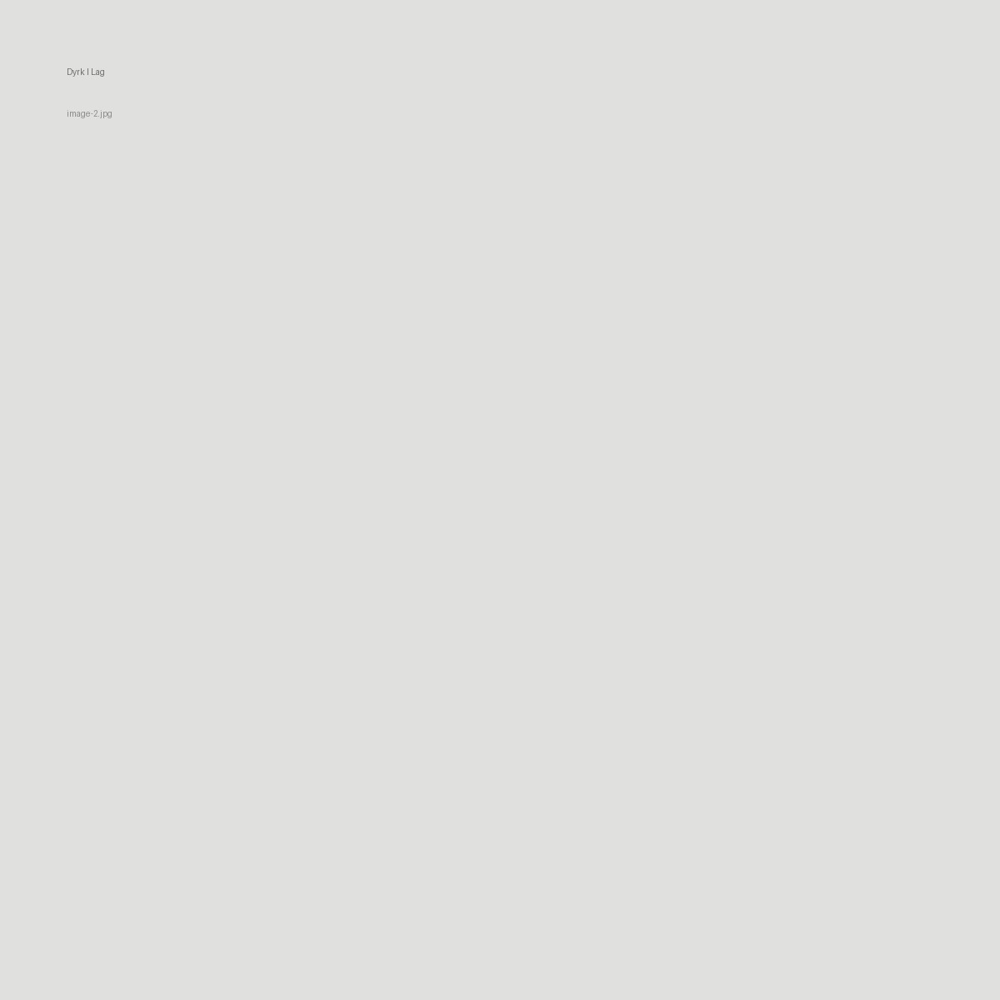
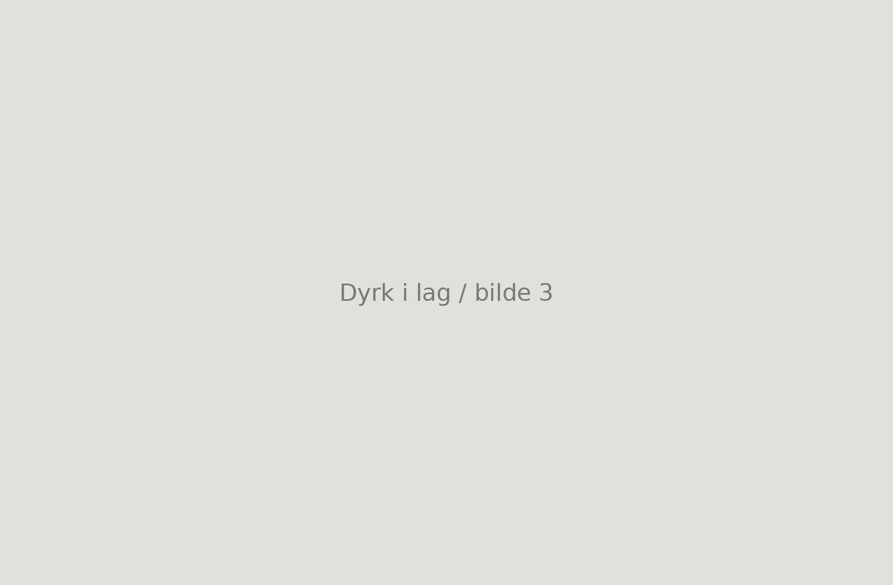
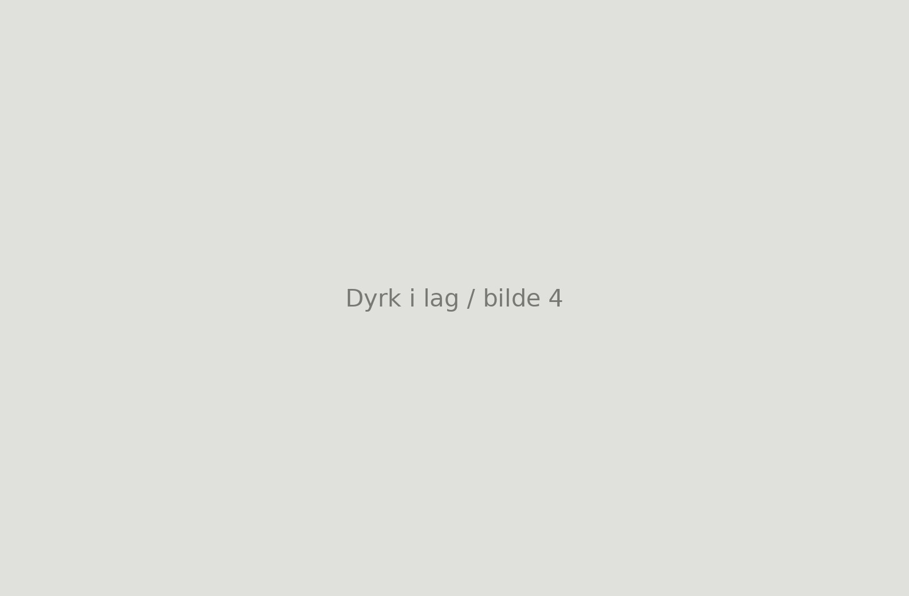
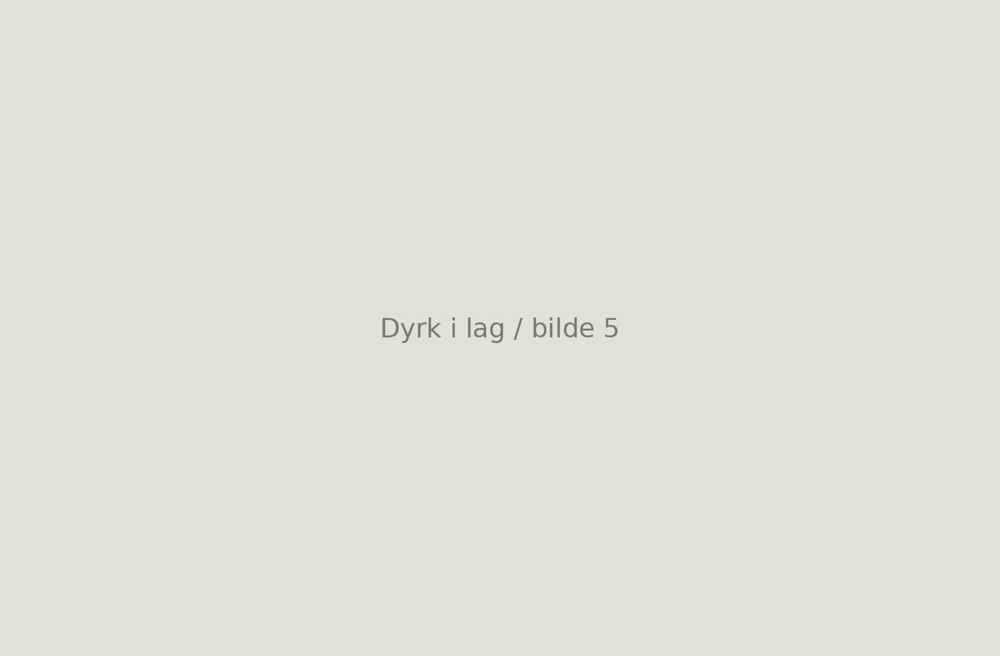

← Tilbake
Dyrk i lag
År / sted / type / rolle
Skriv en kort prosjekttekst her. Beskriv konsept, situasjon, materialer, metode og hva prosjektet undersøker. Teksten kan være på 100–250 ord.
 Bilde 01Skriv en kort beskrivende tekst til dette bildet her. For eksempel: tegningstype, motiv, konsept, materialitet, prosess eller romlig kvalitet.
Bilde 01Skriv en kort beskrivende tekst til dette bildet her. For eksempel: tegningstype, motiv, konsept, materialitet, prosess eller romlig kvalitet.

Bilde 02Skriv en kort beskrivende tekst til dette bildet her. For eksempel: tegningstype, motiv, konsept, materialitet, prosess eller romlig kvalitet.

Bilde 03Skriv en kort beskrivende tekst til dette bildet her. For eksempel: tegningstype, motiv, konsept, materialitet, prosess eller romlig kvalitet.

Bilde 04Skriv en kort beskrivende tekst til dette bildet her. For eksempel: tegningstype, motiv, konsept, materialitet, prosess eller romlig kvalitet.

Bilde 05Skriv en kort beskrivende tekst til dette bildet her. For eksempel: tegningstype, motiv, konsept, materialitet, prosess eller romlig kvalitet.
Tips: Bytt ut bildefilene i assets/projects/dyrk-i-lag/. Behold filnavnene cover.jpg, image-1.jpg, image-2.jpg osv., så slipper du å endre koden.